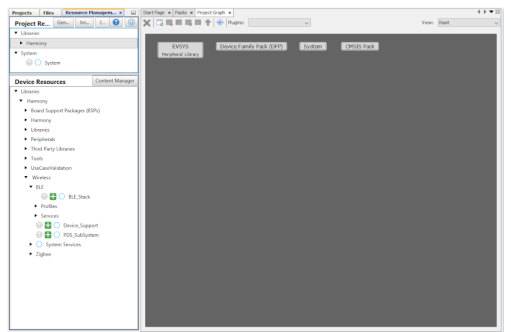
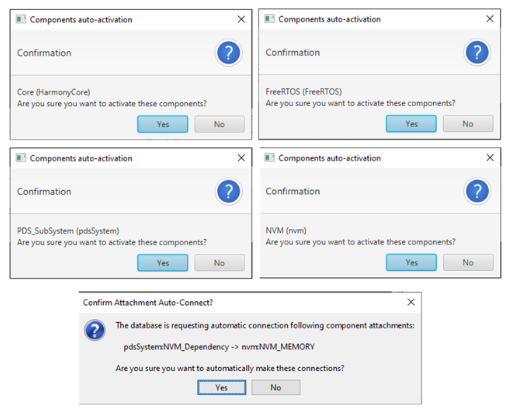
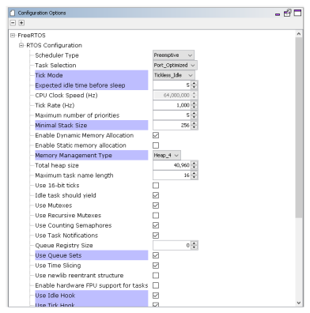
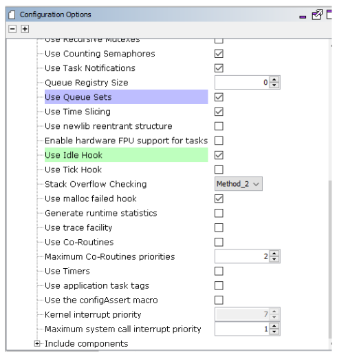
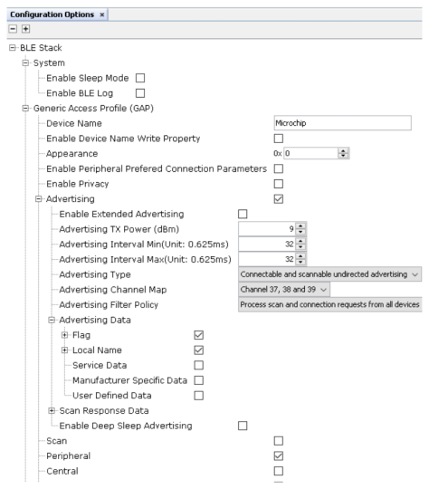

4.1.2.1 Peripheral - FreeRTOS BLE Stack and App Initialize
Getting Started with Peripheral Building Blocks
FreeRTOS BLE Stack and App Initialize –> Adding UART
Introduction
This document will help users create a new MCC Harmony project, configure the FreeRTOS and BLE stack components in the project and generate code using the MPLAB Code Configurator (MCC).
It is recommended to follow the examples in order, by learning the basic concepts first and then progressing to the more advanced topics.
Recommended Reading
Hardware Requirement
None
Software Setup
Steps to Init BLE Stack
Create a new MCC Harmony Project. For more details on creating a new MCC Harmony Project, refer to Creating a New MCC Harmony Project.
- Open the MPLAB Code Configurator.
 Default MPLAB Code Configurator window
Default MPLAB Code Configurator window
- In the Device Resources window, expand Libraries > Harmony > Wireless > Drivers > BLE and click the plus symbol next to the BLE Stack component to add it on to the project graph

After BLE Stack is added to the project graph, different component dependencies will be requested to be added as well. User has to select yes to add the dependent components.

Verify the Project Graph

- Display the FreeRTOS component configuration options by selecting the component in the project graph. Configure the FreeRTOS component to the following. The configuration chosen here must suit most application needs. Users are recommended to follow the FreeRTOS Customization documentation accordingly.Note: Upon selecting any component, the default configuration options available for the user are displayed.

Note: By default, the "Total heap size" is set to a default value which might not be sufficient to a specific project. If the total heap size is not enough, vApplicationMallocFailedHook( ) will be caght. Then user can adjust the "Total heap size" to avoid this situation.Note: It is required to address the heap needed or BLE stack library as defined in initialization.c #define EXT_COMMON_MEMORY_SIZE (22*1024). Hence the default "Total heap size" allocated by core component is not sufficient. Allocate atleast59392size
- Display the BLE Stack component configuration
options by selecting the component in the project graph. Configure the BLE
Stack component to the following. By default, the peripheral device
functionality is enabled.

Switch to the IDE window, right click on the project, and open the Project Properties
Ensure correct compiler version as suggested in Getting Started with Software Development is chosen then click apply
Build Project and upon building the project, user action is required
Build Project again and the project will now compile successfully